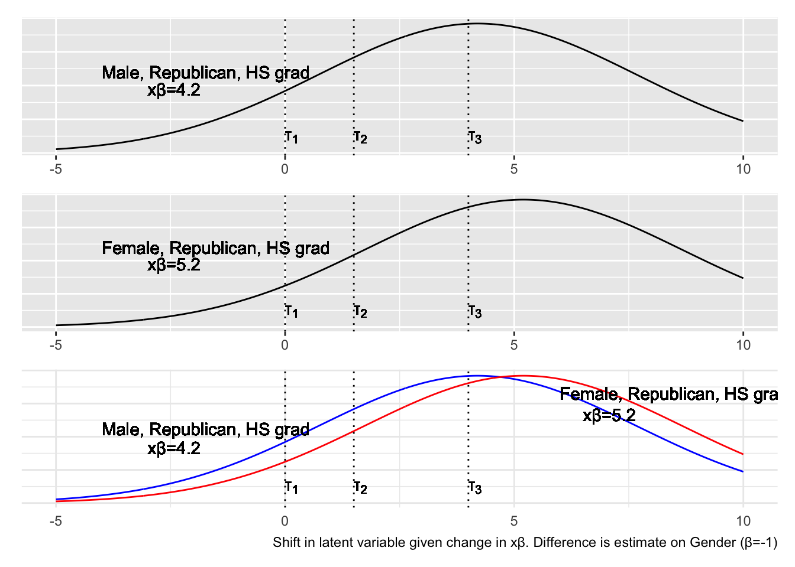
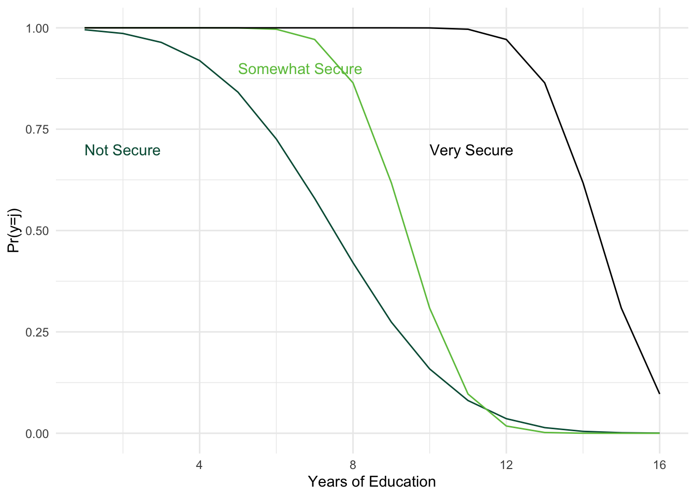
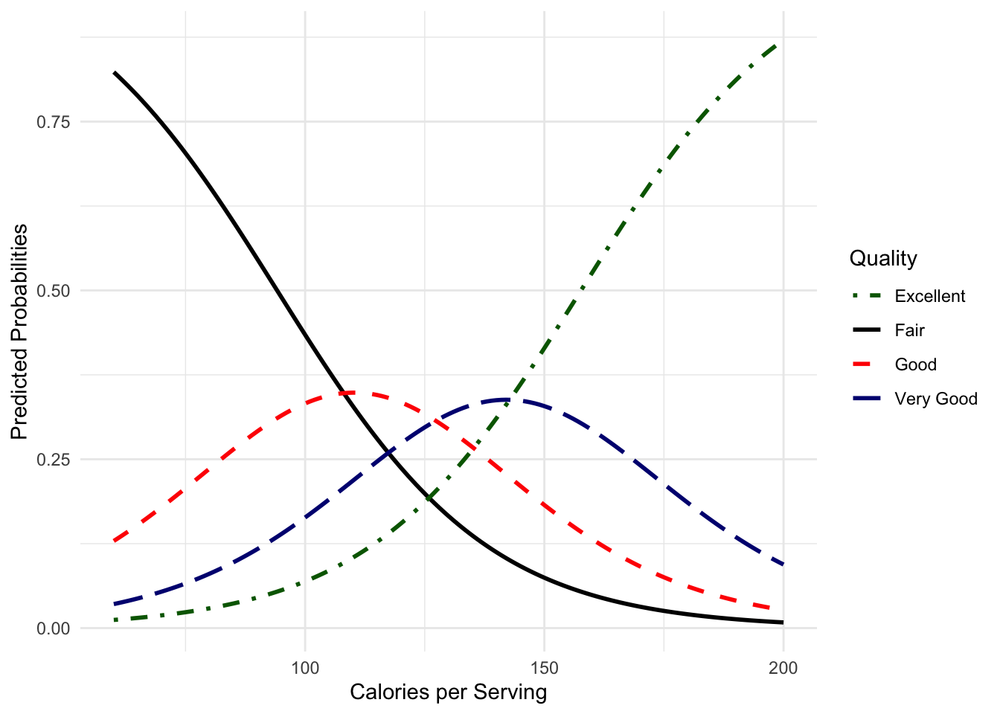
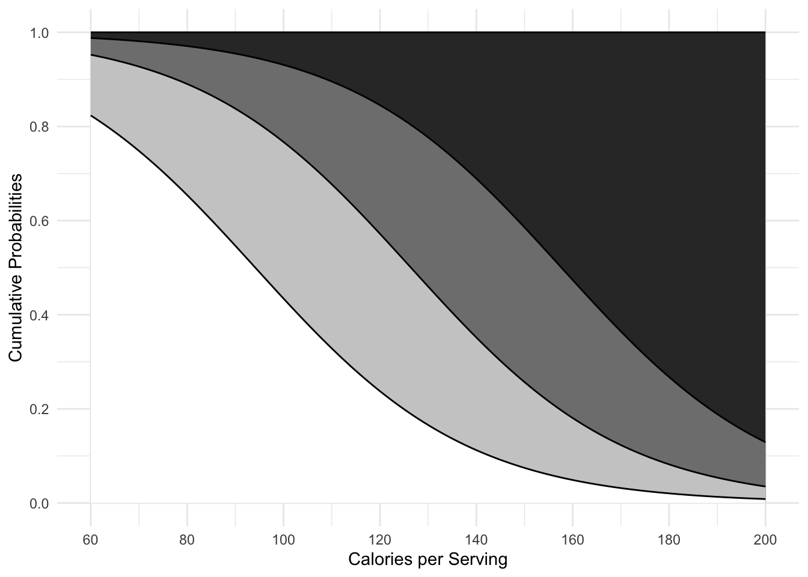

The binary model serves as the root, or really a special case, of many other models. More generally, the binomial distribution informs many models beyond the binary variable ones.
instead of a binary choice, we can consider multiple choices simply by extending the utility model logic, and expanding the on/off switches in the LLF (weeks 8, 9).
we can consider multiple ordered choices (we’ll look at this today).
we can relax the assumption observations are independent over time, that the DGP has no memory (discrete hazards - last time).
we can relax the constant variance assumption (today).
we can relax the symmetry assumption in the link function (2 weeks ago).
we can take binary events, binomially distributed, count them up over time, and treat them as discrete (Poisson) event counts (week 10).
Today, we’ll discuss models for ordered \(y\) variables, and how to address non-constant variance in the probit model.
Ordered \(y\) Variables
So far, we’ve considered the binary dependent variable. One straightforward extension of this model is the ordered regression - where \(y\) takes on more than 2 values, and we assume those values are ordered. This is a significant assumption. But it’s useful to show how easily these models simply extend the binary models.
Revisiting continuous v. discrete measures
Continuous variables (interval, ratio level) have meaningful distances between discrete observations and can be infinitely divided.
We could, for instance, infinitely divide a measure of income into finer and finer units. The distances between these units would be equal and meaningful in some fashion.
Discrete variables, on the other hand, only take on certain values.
Those values may or may not indicate order, value or magnitude, and the intervals between values generally are not meaningful nor are they equal.
Discrete indicators cannot reasonably be subdivided in meaningful ways as a general rule.
In spite of this distinction, it is not uncommon for scholars to use a continuous data model (e.g. OLS) to examine data that are by their nature discrete. While the results of doing so are not always awful, they are suboptimal. If we treat a discrete ordered variable as if it is continuous, we are explicitly assuming that the distances between categories are equal. If this assumption is met, our estimates of \(\beta\) might be unbiased (though the errors will be heteroskedastic and nonnormal); if this assumption is not met, then even the \(\beta\)s are biased.
Discrete Ordered Variables
When we are interested in predicting an ordered (discrete) variable, we can turn to the ordered logit and probit models - these are natural extensions of the binary models we’ve already discussed and are not that much more complicated. I will focus on the ordered probit because it is more common in the literature, and because it can be easily extended to accommodate non constant errors.
What sorts of measures are ordinal? Likert scales, ranks, survey responses, eg. how much do you trust government to protect you from terrorists?
not at all.
somewhat.
substantially.
completely.
We can receive 4 meaningful responses (the fifth less meaningful response would be “no opinion, don’t know”) - we’d need this category for exhaustiveness.
These observed responses represent some latent variable, trust in government. We cannot directly observe this variable but can measure and observe these discrete manifestations of the unobserved variable.
When we estimate and interpret the discrete variable model, we are interested in the effect of \(x_i\) on the underlying latent variable \(y^{*}\), though we only measure \(y_{i}\). We are really interested in the probability of any given level of trust in government, not in whether the mean of \(y\) is 2.3 or 2.6; in fact, is this mean even meaningful? Given the latent variable motivation, no. This is part of the problem with linear regression on such variables.
Latent Variable Motivation
Begin with the binary case - assume a latent quantity we’re interested, denoted \(y^*\), but our observations of \(y\) are limited to successes (\(y_i=1\)) and failures (\(y_i=0\)).
Let \(\tau_1=0\) (as above); let \(-\infty = \tau_0\); let \(\infty=\tau_2\). We now have \(j\) categories of \(y\) (\(j=2\) in the binary case above), and we have \(j+1=3\) unobserved thresholds, \(\tau_0, \tau_1, \tau_2\):
As before, let \(\tau_0= -\infty\), \(\tau_j=\infty\), and \(\tau_1=0\); so we need to estimate \(j-3\) thresholds or values of \(\tau\).
Let’s relate the formal statement of what we observe (\(y_i= j, \mbox{if } \tau_{j-1} \leq y^{*}\) etc.) to the survey example.
What are the \(\tau\)s? These are the cutpoints or dividing thresholds between categories of our observed variable, \(y\). Thus, \(\tau_{1}\) is the threshold between respondents that fall in the zero category and those that fall in the one category; \(\tau_{2}\) is the threshold between one and two, etc.
These thresholds represent an important link between our underlying latent variable and the observed variable insofar as the thresholds measure the probability on the normal curve where we make the transition from one category to the other.
Recall where we started with the latent variable as a linear function of systematic and random components:
If we had a survey question asking “How secure do you feel personally given the Department of Homeland Security’s handling of terrorist threats?” with the following results,
not secure at all, I hide under the bed most days - 32%
somewhat secure, i’ve got lots of duct tape - 12%
very secure, i like the color charts a lot - 22%
more secure than I’ve ever felt, bring it on big daddy - 30%
then these percentages represent the probability at which we shift from one category to the next. So these probabilities divide the normal (in the probit model) into 4 regions each containing the correct mass.
so in the survey, the probability \(y_i=1\) is the area between the two thresholds that delineate \(y_i=1\); so the area beneath \(\tau_1\) and \(\tau_0=-\infty=0\)
This formulation gives us the probability any observation falls in the area between thresholds, and thus provides us estimates of the probability of observing any particular value of the dependent variable.
more secure than I’ve ever felt, bring it on big daddy.
And imagine we also have data on respondents’
years of education (0-16)
gender (0 = female; 1 = male)
party id (0 = democrat; 1 = republican)
Suppose we use an ordered probit to regress survey response (increasing in security), on education, gender, and party:
Fake Estimates: Perceptions of Security
X
\(\widehat{\beta}\)
s.e.
gender
-1.0
(.22)
party id
+2.0
(.034)
education
+0.6
(.11)
constant
-4.0
(1.2)
\(\tau_2\)
+1.5
(.51)
\(\tau_3\)
+3
(.42)
Recall that \(\tau_0=-\infty\); \(\tau_1=0\); and \(\tau_4=+\infty =1\); the constant shifts \(\tau_1\).
Shifting \(x\beta\) shifts the curve left and right …
code
# Load required librarieslibrary(ggplot2)library(gridExtra)# Set seed for reproducibilityset.seed(123)# Create datan <-1000z <-seq(-5, 10, length.out = n)# Calculate normal densitiesa <-dnorm(z, mean =4.2, sd =sqrt(12))b <-dnorm(z, mean =5.2, sd =sqrt(12))# Define thresholdst1 <-0t2 <-1.5t3 <-4# Create data framedf <-data.frame(z = z, a = a, b = b)# Function to create plotscreate_plot <-function(data, y_var, title, x_beta) {ggplot(data, aes(x = z)) +geom_line(aes_string(y = y_var)) +geom_vline(xintercept =c(t1, t2, t3), linetype ="dotted") +geom_text(aes(x =0, y =0.014, label ="τ[1]"), parse =TRUE, hjust =0) +geom_text(aes(x =1.5, y =0.014, label ="τ[2]"), parse =TRUE, hjust =0) +geom_text(aes(x =4, y =0.014, label ="τ[3]"), parse =TRUE, hjust =0) +geom_text(aes(x =-3, y =0.057, label =paste0("xβ=", x_beta)), hjust =0) +geom_text(aes(x =-4, y =0.072, label = title), hjust =0) +#theme_minimal() +theme(axis.text.y =element_blank(), axis.ticks.y =element_blank(),axis.title =element_blank(), legend.position ="none") }# Create plotsp1 <-create_plot(df, "a", "Male, Republican, HS grad", 4.2)p2 <-create_plot(df, "b", "Female, Republican, HS grad", 5.2)# Combined plotp3 <-ggplot(df, aes(x = z)) +geom_line(aes(y = a), color ="blue") +geom_line(aes(y = b), color ="red") +geom_vline(xintercept =c(t1, t2, t3), linetype ="dotted") +geom_text(aes(x =0, y =0.014, label ="τ[1]"), parse =TRUE, hjust =0) +geom_text(aes(x =1.5, y =0.014, label ="τ[2]"), parse =TRUE, hjust =0) +geom_text(aes(x =4, y =0.014, label ="τ[3]"), parse =TRUE, hjust =0) +geom_text(aes(x =-3, y =0.05, label ="xβ=4.2"), hjust =0) +geom_text(aes(x =6.0, y =0.099, label ="Female, Republican, HS grad"), hjust =0) +geom_text(aes(x =6.5, y =0.08, label ="xβ=5.2"), hjust =0) +geom_text(aes(x =-4, y =0.067, label ="Male, Republican, HS grad"), hjust =0) +#geom_text(aes(x = -4, y = 0.072, label = "Shift in latent variable given change in xβ. Difference is estimate on Gender (β=-1)"), hjust = 0) +theme_minimal() +theme(axis.text.y =element_blank(), axis.ticks.y =element_blank(),axis.title =element_blank(), legend.position ="none") +labs(caption="Shift in latent variable given change in xβ. Difference is estimate on Gender (β=-1)")p1/p2/p3

code
# Load required librarieslibrary(plotly)# Set seed for reproducibilityset.seed(123)# Create datan <-1000z <-seq(-5, 10, length.out = n)# Calculate normal densitiesa <-dnorm(z, mean =4.2, sd =sqrt(12))b <-dnorm(z, mean =5.2, sd =sqrt(12))# Define thresholdst1 <-0t2 <-1.5t3 <-4# Create data framedf <-data.frame(z = z, a = a, b = b)# Create the interactive plotplot <-plot_ly() %>%add_lines(x =~z, y =~a, data = df, name ="Male", line =list(color ="#005A43"), visible =TRUE) %>%add_lines(x =~z, y =~b, data = df, name ="Female", line =list(color ="#6CC24A"), visible =FALSE) %>%add_segments(x = t1, xend = t1, y =0, yend =0.045, line =list(dash ="solid",color ="#6CC24A"), showlegend =FALSE) %>%add_segments(x = t2, xend = t2, y =0, yend =0.045, line =list(dash ="solid",color ="#6CC24A"), showlegend =FALSE) %>%add_segments(x = t3, xend = t3, y =0, yend =0.045, line =list(dash ="solid", color ="#6CC24A"), showlegend =FALSE) %>%add_annotations(x =c(0, 1.5, 4), y =0.014, text =c("τ[1]", "τ[2]", "τ[3]"), showarrow =FALSE) %>%layout(showlegend =FALSE,xaxis =list(title ="", range =c(-5, 10)),yaxis =list(title ="", showticklabels =FALSE),annotations =list(list(x =-3, y =0.05, text ="xβ=4.2", showarrow =FALSE, visible =TRUE),list(x =-4, y =0.059, text ="Male, Republican, HS grad", showarrow =FALSE, visible =TRUE),list(x =-3, y =0.01, text ="xβ=5.2", showarrow =FALSE, visible =FALSE),list(x =-4, y =0.059, text ="Female, Republican, HS grad", showarrow =FALSE, visible =FALSE),list(x =-4, y =0.028, text ="Shift in latent variable given change in xβ.<br>Difference is estimate on Gender (β=-1)", showarrow =FALSE, visible =FALSE) ),updatemenus =list(list(type ="buttons",direction ="right",x =0.1,y =1.2,buttons =list(list(method ="update",args =list(list(visible =c(TRUE, FALSE, TRUE, TRUE, TRUE, TRUE, TRUE)),list(title ="Male, Republican, HS grad",annotations =list(list(x =-3, y =0.05, text ="xβ=4.2", showarrow =FALSE, visible =TRUE),list(x =-4, y =0.059, text ="Male, Republican, HS grad", showarrow =FALSE, visible =TRUE) )) ),label ="Figure 1"),list(method ="update",args =list(list(visible =c(FALSE, TRUE, TRUE, TRUE, TRUE, TRUE, TRUE)),list(title ="Female, Republican, HS grad",annotations =list(list(x =-3, y =0.05, text ="xβ=5.2", showarrow =FALSE, visible =TRUE),list(x =-4, y =0.059, text ="Female, Republican, HS grad", showarrow =FALSE, visible =TRUE) )) ),label ="Figure 2"),list(method ="update",args =list(list(visible =c(TRUE, TRUE, TRUE, TRUE, TRUE, TRUE, TRUE)),list(title ="Combined Plot",annotations =list(list(x =-3, y =0.05, text ="xβ=4.2", showarrow =FALSE, visible =TRUE),list(x =-4, y =0.059, text ="Male, Republican, HS grad", showarrow =FALSE, visible =TRUE),list(x =6.5, y =0.059, text ="Female, Republican, HS grad", showarrow =FALSE, visible =TRUE),list(x =6.5, y =0.05, text ="xβ=5.2", showarrow =FALSE, visible =TRUE),list(x =-4, y =0.028, text ="Shift in latent variable given change in xβ.<br>Difference is estimate on Gender (β=-1)", showarrow =FALSE, visible =TRUE) )) ),label ="Figure 3") ) ) ) )# Save the plot as an HTML filehtmlwidgets::saveWidget(plot, "interactive_ordered_probit_plot.html")plot
Cumulative Probabilities
code
t1 <-0t2 <-1.5t3 <-4education <-1:16xb_RM <- (2-1-4) +0.4* education# probabilitiesc0 <-pnorm(t1 - xb_RM)c1 <-pnorm((t2 - xb_RM) + (t1 - xb_RM))c2 <-pnorm((t3 - xb_RM) + (t2 - xb_RM))c3 <-1-pnorm(t3 - xb_RM)# Create data framedf <-data.frame(education = education, c0 = c0, c1 = c1, c2 = c2, c3 = c3)binghamton_green <-"#005A43"binghamton_gray <-"#6CC24A"binghamton_black <-"#000000"ggplot(df, aes(x = education)) +geom_line(aes(y = c0, color ="Not Secure"), size = .5) +geom_line(aes(y = c1, color ="Somewhat Secure"), size = .5) +geom_line(aes(y = c2, color ="Very Secure"), size = .5) +#geom_line(aes(y = c3, color = "Extremely Secure"), size = 1) +scale_color_manual(values =c("Not Secure"= binghamton_green,"Somewhat Secure"= binghamton_gray,"Very Secure"= binghamton_black)) +annotate("text", x =1, y =0.7, label ="Not Secure", hjust =0, color = binghamton_green) +annotate("text", x =5, y =0.9, label ="Somewhat Secure", hjust =0, color = binghamton_gray) +annotate("text", x =10, y =0.7, label ="Very Secure", hjust =0, color = binghamton_black) +labs(x ="Years of Education", y ="Pr(y=j)") +theme_minimal() +theme(legend.position ="none")

Estimation
Because the ordered probit and logit models are straightforward extensions of the binary models, estimation is relatively simple. Let’s recall the probit likelihood function:
\[\begin{aligned}
L(\beta|Y,X) = \prod\limits_{i=1}^{n} [\Phi(X \beta)]^{y_{i}} [1-\Phi(X \beta)]^{1-y_{i}} \nonumber
\end{aligned}\] and the log likelihood as \[\begin{aligned}
\ln L(\beta|Y,X) = \sum\limits_{i=1}^{n} y_{i} \ln(\Phi(X \beta)) + (1-y_{i}) \ln(1-\Phi(X \beta)) \nonumber
\end{aligned}\]
Note the LLF will turn on for \(y=j\) and off for \(y\neq j\) just as in the binary case.
and as is the case in the binary probit model, we assume \(\sigma^{2}\) to be one (and in the ordered logit model to be \(\frac{\pi^{2}}{3}\)); put another way, we assume the model is homoskedastic. Relaxing this assumption is just as easy in the ordered probit model as it is in the binary model since:
and we can parameterize \(\sigma^{2}\) as \(\exp(z \gamma)\) just as in the binary model.
Example
This example uses a dataset on beer quality and price. The dataset contains the following variables:
quality: quality of the beer (1 = fair, 2 = good, 3 = very good, 4 = excellent)
price: price of the beer
calories: calories per serving
craftbeer: indicator for craft beer
bitter: bitterness score
malty: maltiness score
The \(y\) variable here is the four category quality score.
code
# Load required librarieslibrary(haven)library(dplyr)library(MASS)library(ggplot2)# Read the beer datasetbeer <-read_dta("/Users/dave/Documents/teaching/606J-mle/2024/topics/ordered-variance/beer.dta")# Create quality4 variablebeer <- beer %>%mutate(quality4 =ntile(quality, 4))# Fit ordered logistic regression modelmodel <-polr(factor(quality4) ~ price + calories + craftbeer + bitter + malty, data = beer)stargazer::stargazer(model, type ="html")
Dependent variable:
quality4
price
-0.521*
(0.297)
calories
0.045***
(0.012)
craftbeer
-1.738*
(0.942)
bitter
-0.027
(0.042)
malty
0.054**
(0.025)
Observations
69
Note:
p<0.1; p<0.05; p<0.01
Let’s make predictions of quality over the values of price (at-means):
code
# at means databeersim <-data.frame(calories =60:200,price =4.96,craftbeer =0,bitter =35.44,malty =33.13)# Predict probabilitiesprobs <-predict(model, newdata = beersim, type ="probs")beersim <-cbind(beersim, probs)names(beersim)[6:9] <-c("ProbFair", "ProbGood", "ProbVG", "ProbExc")# plotggplot(beersim, aes(x = calories)) +geom_line(aes(y = ProbFair, color ="Fair"), size =1) +geom_line(aes(y = ProbGood, color ="Good"), size =1, linetype ="dashed") +geom_line(aes(y = ProbVG, color ="Very Good"), size =1, linetype ="longdash") +geom_line(aes(y = ProbExc, color ="Excellent"), size =1, linetype ="dotdash") +scale_color_manual(values =c("Fair"="black", "Good"="red", "Very Good"="navy", "Excellent"="darkgreen")) +labs(y ="Predicted Probabilities", x ="Calories per Serving", color ="Quality") +theme_minimal()

And here, let’s plot the cumulative probabilities:
code
# Calculate cumulative probabilitiesbeersim <- beersim %>%mutate(CDzero =0,CDFair = ProbFair,CDGood = ProbFair + ProbGood,CDVG = ProbFair + ProbGood + ProbVG,CDExcellent = ProbFair + ProbGood + ProbVG + ProbExc )# plotggplot(beersim, aes(x = calories)) +geom_area(aes(y = CDExcellent), fill ="gray20") +geom_area(aes(y = CDVG), fill ="gray50") +geom_area(aes(y = CDGood), fill ="gray80") +geom_area(aes(y = CDFair), fill ="white") +geom_line(aes(y = CDExcellent), color ="black") +geom_line(aes(y = CDVG), color ="black") +geom_line(aes(y = CDGood), color ="black") +geom_line(aes(y = CDFair), color ="black") +labs(y ="Cumulative Probabilities", x ="Calories per Serving") +scale_x_continuous(limits =c(60, 200), breaks =seq(60, 200, by =20)) +scale_y_continuous(limits =c(0, 1), breaks =seq(0, 1, by =0.2)) +theme_minimal() +theme(legend.position ="none")

Parallel Regression Assumption
Ordered models rest on the parallel regression assumption (in the ordered logit, this is sometimes called the proportional odds assumption). The parallel regression assumption requires that the effect of \(X_{i}\) is \(\beta\) for all categories of \(Y\). That is, the regression of \(y_i\) on \(x\) is parallel to the regression of \(y_j\) on \(x\) and so forth.
Suppose we have some reason to expect that \(X_{i}\) increases the probability of \(Y=1\), but decreases the probability of \(Y=2\). First, it seems likely we should revisit whether or not \(Y\) is ordinal. Second, since we’re only estimating one value of \(\beta\), it cannot simultaneously represent our expectations that \(X_{i}\) increases one probability while decreasing another. So, if we run the ordered model, we will only get one value of \(\beta\) and its effect will be the same on all categories of \(Y\).
Here’s what non-parallel regressions might look like:
Estimate the ordered logit model and a multinomial model and compare how well they fit the data (compare the log-likelihood \(\chi^{2}\) values). Also examine the MNL estimates of \(\beta\) for \(x_i\) and see if they are the same across categories. MNL relaxes the parallel regression assumption. - A second informal way is to estimate \(j-1\) individual probit or logit models, one for each additional value of \(Y\). Compare the estimates of \(\beta_{j}\) with the ordered probit/logit estimate of \(\beta\). If the estimates are roughly the same, the parallel regression assumption is likely met. This is equivalent to the ordered logit/MNL comparison above.
formal tests exist as well comparing models where parallel regressions is relaxed and where it’s not.
The parallel lines assumption is, in my experience, difficult to satisfy. Long & Freese (p. 168) seem to have the same experience. The assumption is extremely restrictive, and perhaps difficult to meet for two reasons:
\(y\) may not actually be ordered.
\(y | \mathbf{X}\) is very likely not ordered.
Relaxing Parallel Regression
The Generalized ordered logit/probit is one pathway to relaxing the parallel regression assumption. The generalized ordered logit/probit allows for the effects of \(X\) to vary across categories of \(y\), such that the model estimates \(k-1\) values of \(\beta\). The model can be unstable and produce predictions out of bounds. Here’s the same model predicting beer quality, but we’re relaxing the parallel regression assumption in the variables “price” and “calories” - you’ll note each of these has \(k-1\) coefficients.
Price and Calories can exert effects in different directions across categories of \(y\), hence relaxing the parallel regression assumption.
Use Ordered Models with Caution …
My own view is ordered models rarely fit the data - our outcome variables are rarely conditionally ordered, i.e, the expected value of \(y\) ordered given the variables in the model. Other models (choice models in particular) are better suited for much of our data - and we are better able to satisfy their assumptions. As the wise man says, just because something can be ordered doesn’t mean it should be. Or, as the econometrician Amemyia (1985) says,
“A model is unordered if it is not ordered.” (Amemyia 1985, 292).
Constant Variance in Binary Response Models
The assumption of constant variance is potentially a bigger problem than in the linear model. In the linear model, the estimates are unbiased, but the errors are inefficient. In the ML setting, the estimates are inconsistent (biased) and the errors are wrong. Consider the probit LLF:
The notion here is that the variance is neither constant nor random - it potentially arises as a function of variables, so the goal is to write the variance as a systematic function of variables and coefficients. For the probit model, let
The LLF now has two unknowns, \(\widehat{\beta}\) and \(\widehat{\gamma}\), where \(\widehat{\beta}\) represents the effects of \(X\) on the mean probability of \(y\), and \(\widehat{\gamma}\) represents the effects of \(Z\) on the variance of \(y\). \(X\) and \(Z\) can be the same - we can anticipate that the same variables (or some of the same variables) influence the mean of \(y\) and the variance of \(y\).
if the effect of \(Z\) on the variance is zero, then \(\sigma^{2}\) must revert to one.
Exponentiating $z $ accomplishes both of these goals: it will always be positive and if \(z\gamma\) equals 0, then \(e^{z\gamma}\) will equal one and the model is homoskedastic.
What if variance is not constant?
You notice that dividing the estimate by the variance presents a significant problem if the variance is larger for some groups in the data, smaller for others, but we restrict it to 1:
for a group with larger variance, but restricted to 1, we over estimate \(\beta\). - for a group with smaller variance, but restricted to 1, we under estimate \(\beta\).
So the estimates are inconsistent and the standard errors are incorrect. The bottom line is the heteroskedasticity is a bigger deal in binary response models than in the linear model.
Thinking about the variance
What does it mean for the variance to be different for different groups in the data? We are accustomed to thinking of groups in the data having different means - this is not so different.
one group in the data, given by some \(x\) variable, is more diffuse or variant in its behavior on \(y\) than another group.
those groups may or may not share the same mean behavior.
Variance of \(\epsilon\)
The variance of \(\epsilon\) in any model can be thought of like this:
\[\begin{aligned}
var(\epsilon_i)=var(\epsilon_j) \forall i,j \ldots n \nonumber
\end{aligned}\]
This is explicitly why we write the variance of the errors without a subscript - var(\(\epsilon\)) - it is constant across all \(i\).
Put slightly differently, the distribution of \(\epsilon\) is the same for all \(i\). If this does not hold, then the errors are not independent and identically distributed (i.i.d.) - their distributions are different. This is just another way to state the problem of nonconstant variance.
This figure illustrates what it means for the variance to be different for different groups in the data. In the top panel, the means differ, but variances are the same. This approximates the homoskedastic case. In the bottom panel, the means differ, as do the variances. This is the heteroskedastic case.
code
z <-seq(-5, 5, length.out =1000)a <-dnorm(z, mean =-1, sd = .5)b <-dnorm(z, mean =1, sd = .5)c <-dnorm(z, mean =-1, sd = .5)d <-dnorm(z, mean =1, sd =sqrt(2))df1 <-data.frame(z = z, a = a, b = b)df2 <-data.frame(z = z, c = c, d = d)#plot using binghamton colors and annotate in the plot; exclude legendp1 <-ggplot(df1, aes(x = z)) +geom_line(aes(y = a, color ="Mean -1, Var 1"), size =1) +geom_line(aes(y = b, color ="Mean 1, Var 1"), size =1) +scale_color_manual(values =c("Mean -1, Var 1"= binghamton_green,"Mean 1, Var 1"= binghamton_gray)) +labs(x ="z", y ="Density", color ="Group") +theme_minimal() +theme(legend.position ="none")+ggtitle("Constant Variance")p2 <-ggplot(df2, aes(x = z)) +geom_line(aes(y = c, color ="Mean -1, Var 1"), size =1) +geom_line(aes(y = d, color ="Mean 1, Var 2"), size =1) +scale_color_manual(values =c("Mean -1, Var 1"= binghamton_green,"Mean 1, Var 2"= binghamton_gray)) +labs(x ="z", y ="Density", color ="Group") +theme_minimal() +theme(legend.position ="none")+ggtitle("Non-Constant Variance")p1/p2
A Framework for Theory about Variance
We’ve spent a lot of time fretting about the information in our data w.r.t. maximizing the LLF. A good bit of that information is related to the variability in the data. It makes sense to think about the sources of that variability. In building arguments, quantitative social scientists tend to obsess over central tendency, but to neglect thinking about what the dispersion in the data means.
Here’s an attempt at a basic framework for thinking about variance:
Variance Framework
Substantively, what can variance represent?
amount of information (certainty, uncertainty)
precision, accuracy
uniformity, diversity, heterogeneity
choice, constraint
ability, inability
ambivalence
Imagine a data set of \(y\) and \(x\) – suppose \(x\) is binary - it might relate to the mean of \(y\) and to the variance of \(y\), such that:
an increase in \(x\) is related to an increase (decrease) in \(y\).
an increase in \(x\) is related to an increase (decrease) in the variance of \(y\).
This might be because:
there are two groups of observations in the data w.r.t. \(x\)
one group has a higher/lower mean of \(y\) than the other.
one group is more/less heterogeneous in \(y\) than the other.
Perhaps this is because:
as individuals become more informed, they prefer more \(y\). This is an expectation about the mean of \(y\) - as \(x\) increases, the mean of \(y\) increases.
as individuals become more informed, they behave more uniformly in preferring \(y\). This is an expectation about the variance of \(y\) - as \(x\) increases, the variance surrounding \(y\) decreases.
less informed individuals prefer less \(y\), but choose more diffusely.
\(x\) has two effects - increasing the mean and decreasing the variance of \(y\).
Example
As an illustratio, let’s estimate a model predicting whether respondents believe Barack Obama is a secret Muslim. This analysis uses data from the ANES 2016 Pilot. We’ll specify two models. The probit model regresses responses to a question about whether Obama is a secret Muslim on a set of demographic and political variables; the heteroskedastic probit model posits age affects both the mean (as in the first model) and the variance. The expectation is that older voters are more likely to believe Obama is a secret Muslim, and that older voters believe this less uniformly or more diffusely than do younger voters. So we expect the effect of age on the mean to be positive, and the effect of age on the variance to be negative. Results are below - the first model is the standard probit model, the second is the heteroskedastic probit model.
code
library(Rchoice)# ANES 2016 dataanes <-read_csv("/Users/dave/Documents/teaching/606J-mle/2020/slides/L3_binaryextensions/code/anes_pilot_2016.csv")# Select variablesvars_to_keep <-c("bo_muslim", "pid7", "disc_wo", "lazyb", "disc_b", "faminc", "birthyr", "race", "autism", "disc_selfsex", "gender", "vaccine")anes <- anes[, vars_to_keep]# Recode variablesanes <- anes %>%mutate(pid7 =as.numeric(pid7),bo_muslim =case_when( bo_muslim ==2~0, bo_muslim ==1~1, bo_muslim ==8~NA_real_,TRUE~ bo_muslim ),pid7 =ifelse(pid7 >7, NA, pid7),disc_wo =ifelse(disc_wo >7, NA, disc_wo),lazyb =ifelse(lazyb >7, NA, lazyb),disc_b =ifelse(disc_b >5, NA, disc_b),faminc =ifelse(faminc >16, NA, faminc),age =2016- birthyr,white =ifelse(race ==1, 1, 0),# Reverse codingdisc_wo =-1* disc_wo +6,disc_selfsex =-1* disc_selfsex +6,autism =-1* autism +7,disc_b =-1* disc_b +6 )# Ensure disc_wo is binary for probit modelanes <- anes %>%mutate(disc_wo_binary =ifelse(disc_wo >median(disc_wo, na.rm =TRUE), 1, 0))# model hetprob_model <-hetprob(bo_muslim ~ white+disc_b+pid7+age+ faminc+autism | age, data = anes, link="probit")# Compare with standard probit modelprobit_model <-glm(bo_muslim ~ white + disc_b + pid7 + age + faminc + autism, data = anes, family =binomial(link ="probit"))# Load required librarieslibrary(Rchoice)library(kableExtra)library(dplyr)# Function to extract and format Rchoice model resultsextract_rchoice_results <-function(model) { coef <-tryCatch(coef(model), error =function(e) NULL) vcov_matrix <-tryCatch(vcov(model), error =function(e) NULL)if (is.null(coef) ||is.null(vcov_matrix)) {stop("Unable to extract coefficients or variance-covariance matrix from the model.") } se <-sqrt(diag(vcov_matrix)) p_value <-2* (1-pnorm(abs(coef / se))) results_df <-data.frame(Estimate = coef,`Std. Error`= se,`Pr(>|z|)`= p_value )return(results_df)}# Function to create a formatted HTML table for two modelscreate_two_model_table <-function(model1, model2, model1_name ="Model 1", model2_name ="Model 2") {tryCatch({# Extract results for both models results1 <-extract_rchoice_results(model1) results2 <-extract_rchoice_results(model2)# Combine results combined_results <-full_join( results1 %>%mutate(Variable =rownames(results1)), results2 %>%mutate(Variable =rownames(results2)),by ="Variable",suffix =c(".1", ".2") ) %>%select(Variable, everything()) %>%arrange(Variable)# Rename columnsnames(combined_results) <-c("Variable","Estimate.1", "Std. Error.1", "Pr(>|z|).1","Estimate.2", "Std. Error.2", "Pr(>|z|).2")# Create HTML table html_table <-kable(combined_results, format ="html",digits =3,caption ="Comparison of Probit Models") %>%kable_styling(bootstrap_options =c("striped", "hover", "condensed", "responsive")) %>%add_header_above(c(" "=1, model1_name =3, model2_name =3)) # Save the HTML table to a file#writeLines(as.character(html_table), "two_model_results.html")# Print the HTML codeprint(html_table) }, error =function(e) {cat("An error occurred:", conditionMessage(e), "\n") })}# Usage example (replace with your actual models):create_two_model_table(probit_model, hetprob_model, model1_name ="Base Model", model2_name="Extended Model")
Comparison of Probit Models
model1_name
model2_name
Variable
Estimate.1
Std. Error.1
Pr(>|z|).1
Estimate.2
Std. Error.2
Pr(>|z|).2
(Intercept)
-1.808
0.278
0.000
-1.253
0.284
0.000
age
0.013
0.003
0.000
0.010
0.002
0.000
autism
0.199
0.030
0.000
0.128
0.033
0.000
disc_b
-0.145
0.043
0.001
-0.101
0.033
0.002
faminc
-0.055
0.015
0.000
-0.035
0.012
0.004
het.age
NA
NA
NA
-0.009
0.004
0.028
pid7
0.231
0.024
0.000
0.148
0.035
0.000
white
0.128
0.116
0.271
0.074
0.078
0.341
Here are predictions from the two models. The main takeaway is that if you change things, things change - so there’s not much substantively to take away from the differences between the predictions. Strong theory expectations would potentially drive expectations about these differences.
code
pred_data <-expand.grid(disc_b =median(anes$disc_selfsex, na.rm =TRUE),age =seq(min(anes$age, na.rm =TRUE), max(anes$age, na.rm =TRUE), length.out =100),faminc =median(anes$faminc, na.rm =TRUE),pid7 =median(anes$pid7, na.rm =TRUE),autism =median(anes$autism, na.rm =TRUE),white =1)# Predict probabilitiespred_probs_het <-predict(hetprob_model, newdata = pred_data, type ="pr")pred_probs_std <-predict(probit_model, newdata = pred_data, type ="response")# Combine predictionsplot_data <-cbind(pred_data, Het_Prob = pred_probs_het,Std_Prob = pred_probs_std)# Create the plotggplot(plot_data, aes(x = age)) +geom_line(aes(y = Het_Prob, color ="Heteroskedastic Probit")) +geom_line(aes(y = Std_Prob, color ="Standard Probit")) +labs(x ="Age", y ="Pr(Secret Muslim)", color ="Model") +theme_minimal() +ggtitle("Comparison of Heteroskedastic and Standard Probit Models")